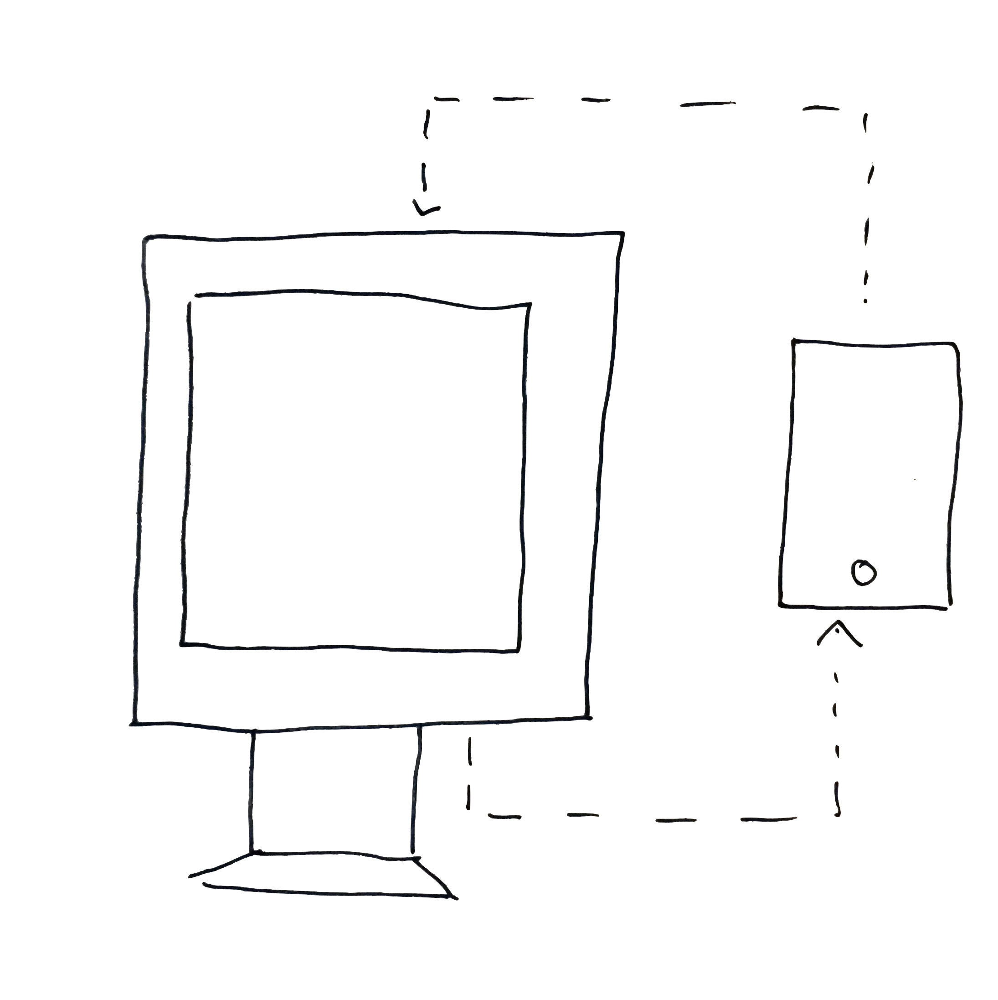
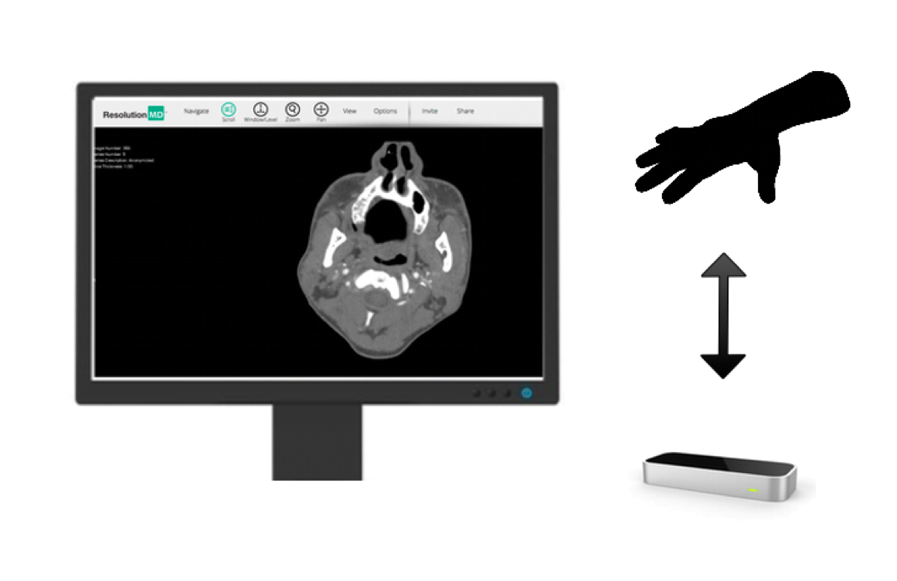
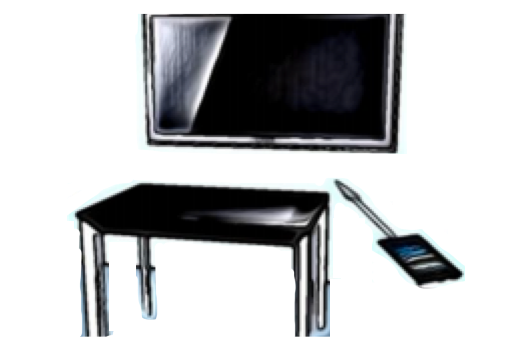

View sharing is used all the time on desktop computers to share work or to get help with a problem. But view sharing isn't really possible on a mobile device. Sandboxing of the app makes it impossible for one app to capture views from another and Apple hasn't provided a screen sharing implementation. View Sharing allows app developers to add screen sharing specifically to their app. It could be used to allow users to share their app with a friend or to provide customer support. The person viewing the screen can see the app from any modern browser and a link can be generated from within the app.

Nurses and doctors often need to access medical images while performing surgery. But if they use a mouse or touch an iPad they need to resterilize. This makes working with medical imaging during surgery tedious and awkward. By using a Leap Motion sensor to find the position and motion of a users hand, they can zoom and slice through MRI or CT scans. This project integrated touchless interaction with an existing medical image viewer ResMD.

A multisurface system is name given by researchers to rooms or enviroments that have a collection of different devices all working closely together. Imagine a single room with a large wall display, a digital tabletop and several iPads, if those devices can all work closely together then we might call the whole thing a multisurface system. By working closely together we mean able to work without a great deal of friction and annoyance. To address one of the main annoyances of working with these devices me and some colleauges in the ASE Lab built the MSE-API. This allows users to move files and content between these devices using their physical position. This means that to send a file, you just need to point at your target device and "flick" the content over.